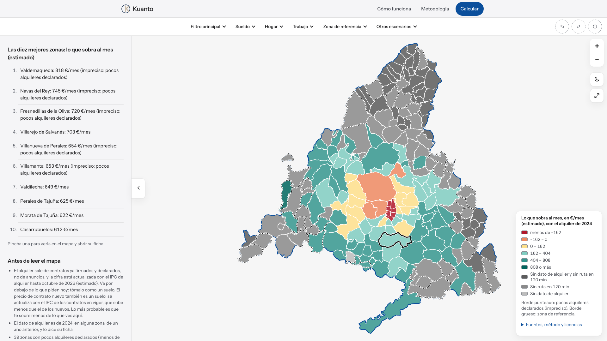

Una ciudad es muchas cosas.
Y vivir en ella se ha convertido
en una cuenta que no sale.
19,6 %
del ingreso neto de un hogar de la ciudad de Madrid se va en el alquiler mediano.
Y no pesa igual en todas partes: del 12,6 % de Villanueva de la Cañada al 24,0 % de Centro.
Fuente: SERPAVI (MIVAU) y Atlas de Distribución de Renta de los Hogares (INE), 2024. Extremos entre zonas con al menos 70 alquileres declarados. Elaboración propia.
Creemos que nadie debería descubrir demasiado tarde que su casa cuesta más de lo que parecía.
Creemos que el tiempo que pasas en un tren también es un precio.
Y que una decisión así merece algo más que un presentimiento.
Merece una respuesta.
Kuanto
Cuánto te sobra al mes, zona a zona.
En directo
Kuanto hace la cuenta. Tú decides dónde vivir.

Captura de la herramienta, 26-11-2026. Fuente: Kuanto, estimado.
Por qué Kuanto
Otros miran el alquiler. Kuanto hace la cuenta entera.
- Alquilercontratos declarados, con horquilla
- Tiempohorarios del CRTM, valorado en euros
- Sueldo netoIRPF y cotizaciones de 2026, del BOE
- Transporteel título más barato para tu ruta y tu edad
- Cestagasto básico por tramo de ingresos (EPF)
- Hogarsolo, en pareja, con hijos, con dos sueldos
- Tu trabajotodo, desde donde trabajas tú
En gris, las dos capas que suelen calcular otras herramientas. Fuente: nota metodológica de Kuanto (app/metodologia.html).
Misma persona, mismo sueldo: de −482 € a +703 € al mes.
Lo que le sobra a Lucía según dónde viva. En 10 de las 99 zonas con dato, no le llega.
Lucía: 30 años, 24.000 € brutos, trabaja en Getafe. Extremos entre zonas con al menos 70 alquileres declarados (Salamanca y Villarejo de Salvanés). Fuente: cálculo de Kuanto (mesobra.calculo), estimado.
Mirar solo el alquiler engaña.
Chamartín
de alquiler mediano. Pesa el 16,0 % de la renta.
Centro
de alquiler mediano. Pesa el 24,0 % de la renta.
El piso caro pesa menos porque allí se gana un 78 % más.
La barra es el peso del alquiler sobre la renta. Fuente: SERPAVI (MIVAU) y ADRH (INE), 2024. Elaboración propia.
Con el sueldo mínimo, vivir lejos compensa en 1 de cada 7 casos.
Lo que ahorras en alquiler por irte lejos solo paga las horas de tren, a lo que ganas por hora, en 1 de cada 7 combinaciones de casa y trabajo.
1.218 de 8.620 pares de zona de casa y de trabajo (14,1 %). Fuente: Kuanto, analisis.json, estimado.
El Bono Alquiler Joven no acepta más donde más pesa el alquiler.
La proporción aceptada no cambia con lo que pesa el alquiler (p = 0,82; estimado).
Con el sueldo mínimo, 16 municipios quedan fuera del tope del Bono. 14, por menos de 80 €.
Fuente: catálogo de datos abiertos de la Comunidad de Madrid (Bono Alquiler Joven 2022); GLM y simulación de Kuanto, estimado.
2027: lo que subiría el abono si no se prorroga el descuento.
+33 €
al mes por adulto, como mucho, si termina todo el descuento con 2026.
Subida al mes por adulto: el extremo bajo, si se retira solo la parte del RDL 17/2025; el alto, si se retira todo el descuento. Fuente: BOCM-20251231-2 y -3; simulación de Kuanto, estimado.
Se lo preguntamos a ChatGPT y a Gemini.
Los asistentes
zonas miradas. Erraron el neto un 2,1 % y un 3,9 %, y cada uno puso un municipio en la zona de abono equivocada.
Kuanto
zonas con cifra, con el neto de la ley y las horas junto al dinero.
Prueba del 25-11-2026 con cuatro respuestas: ilustra, no mide. Fuente: docs/kuanto-frente-a-ia.md.
Cómo lo hicimos
De cero a producto en quince días. Con las reglas primero.
Barras: pull requests fusionados por día (259). Fuente: GitHub del 11 al 25 de noviembre y docs/decisiones.md.
Arquitectura
De la fuente oficial a tu pantalla. Sin servidor.
INE, CRTM, BOE, BOCM, catálogo de la Comunidad, AEAT, MIVAU
cada descarga, inmutable: si cambia un byte, el proceso para
líneas de Python: neto, tarifas, tiempos, alquiler, cesta y modelos
ficheros de datos congelados, validados y con licencia
Fuente: data/README.md, src/mesobra y app/datos del repositorio.
El rigor, en cifras
Detrás de cada número, todos estos.
Fuente: data/README.md, docs/decisiones.md, nota metodológica, docs/informe/cifras.md, app/datos/sdm y GitHub.
Metodología
Cada cifra, con su método. Y su prueba.
La ley de 2026, línea a línea
IRPF estatal y de Madrid y cotizaciones, citados al BOE.
8 casos a mano; error menor de 1 €/mesHorarios reales del CRTM
r5py sobre los GTFS de Metro, Cercanías, EMT e interurbanos.
494 viajes de control; error medio de 20,7 min (estimado)Contratos, no anuncios
SERPAVI × IPC × brecha de los contratos nuevos de la AEAT.
Zonas con menos de 70 alquileres, marcadasHorquillas, no puntos
IC del 95 % por estadísticos de orden, P25–P75 y Bayes empírico.
Lo que falta sale en gris, nunca como ceroPatrón y vecindad
I de Moran, LISA e imputación con validación espacial.
Unas 7 zonas «claras» por azar, y lo decimos (estimado)Inferencia con registro previo
GLM binomial negativa y SEM heterocedástico (GMM).
9 especificaciones publicadas, también las que no salenFuente: app/metodologia.html, docs/informe/cifras.md y docs/decisiones.md.
El equipo
Tres personas. Y un equipo de agentes que no deja pasar una cifra sin fuente.
Fuente: .claude/ y .github/ del repositorio; AGENTS.md.
Privacidad
Tu sueldo nunca sale de tu móvil.
- Sin servidor ni base de datosla cuenta se hace en tu navegador
- Sin cuentas ni registronadie sabe quién eres ni cuánto ganas
- Sin rastreo ni analíticasolo recuerda si prefieres el tema claro u oscuro
- El navegador solo habla con Kuantopolítica de seguridad «self»; funciona sin red
Fuente: app/index.html (Content-Security-Policy) y nota metodológica.
Modelo
Un motor. Tres mercados.
Decidir dónde vivir con la cuenta entera
- Gratis y sin registro
- Escenarios «¿y si…?»: subida del alquiler, fin del descuento, teletrabajo
Medir dónde no llega la política de vivienda
- Informe técnico con ocho recomendaciones
- Bono y abono simulados por municipio
La cifra fiable dentro de otros productos
- Asistentes de IA que responden con nuestras cifras
- Portales de vivienda y movilidad laboral (propuesta)
Fuente: nota metodológica (Mantenimiento), src/mesobra/mcp_servidor.py e informe técnico.
Lo que DataMad pide, cumplido.
- Datos de la Comunidad de Madridcatálogo regional dentro del cálculo: cesta (EPF), Bono, población, empleo y redes del CRTM
- Viabilidad técnicaweb estática que se regenera con un comando y se mantiene con un calendario
- Viabilidad comercialpersonas, Administración y empresas, con coste de servir casi nulo
- Código abiertorepositorio público, código MIT y datos CC BY 4.0 y ODbL
- Valor socialocho recomendaciones a la Administración, ordenadas por la solidez de la prueba
Criterios de la formación oficial de DataMad y de las convocatorias publicadas por la Comunidad de Madrid; las bases completas no se han publicado.
Nadie debería descubrir demasiado tarde cuánto le cuesta su casa.
Kuanto
Yeray · Alex · Izan
Anexo · Las fuentes, por publicador
| Publicador | Descargas | Qué aporta | Licencia |
|---|---|---|---|
| INE | 23 | Renta (ADRH), población, secciones, ECV, coste laboral, IPC, matriz casa-trabajo | CC BY 4.0 |
| CRTM | 13 | GTFS de Metro, Metro Ligero, Cercanías, EMT e interurbanos; coronas; fichas de títulos | Licencia del CRTM |
| BOCM | 13 | Tarifas de 2026 y de 2013, Bono Alquiler Joven, fiestas laborales | Norma pública |
| Catálogo de la Comunidad de Madrid | 12 | EPF (cesta), Bono 2022, población por edad, colectivo empresarial, indicador de renta | CC BY 4.0 |
| BOE | 9 | IRPF, cotizaciones, SMI, IPREM, RDL 17/2025, Estatuto de los Trabajadores | Norma pública |
| AEAT | 7 | Viviendas declaradas en el IRPF: brecha de los contratos nuevos | Aviso legal AEAT |
| MIVAU | 5 | SERPAVI: alquiler de contratos declarados, 2011-2024 | Citando la fuente |
| Otros | 7 | Comisión Europea, Natural Earth, Instituto de Estadística de la Comunidad, Renfe, OpenStreetMap | Según fuente; OSM, ODbL |
Descartadas por licencia o método: Idealista, Fotocasa, fianzas. Fuente: data/README.md y docs/decisiones.md.
Anexo · Método y validación
- Neto. IRPF estatal y de Madrid y cotizaciones de 2026; 8 casos completos calculados a mano, de 17.094 a 80.000 €; la interpolación se separa menos de 1 €/mes.
- Tiempos. r5py sobre los GTFS del CRTM; horarios reconstruidos en el 21,5 % de los pares con ruta, error medio de 20,7 minutos en 494 viajes (estimado).
- Alquiler. Mediana de contratos declarados; zonas con menos de 70 alquileres marcadas como imprecisas (39 de 158); horquilla P25–P75.
- Incertidumbre. IC del 95 % de la mediana por estadísticos de orden; con 142 contrastes, unas 7 zonas saldrían claras por azar (estimado), y lo decimos.
- Espacial. I de Moran y LISA; Bayes empírico para tasas de zonas pequeñas.
- Bono. GLM binomial negativa con offset y SEM espacial; 9 especificaciones publicadas, también las que no salen significativas.
- Registro previo. El criterio se fija antes de ver el resultado; si se cambia después, se declara.
- Lo que falta, en gris. Una zona sin dato nunca sale como cero.
Fuente: app/metodologia.html, docs/informe/cifras.md y docs/decisiones.md.
Anexo · Cómo trabajan los agentes
- El ciclo. Issue → rama y worktree → skill del área → ruff y tests en cada edición → commit → revisor del área → PR → CI → merge.
- Revisores. Abogado del diablo, auditor de cálculos normativos, revisor de código, de diseño, espacial y de seguridad, trazador de cifras y verificador de fuentes.
- Lo que no puede fallar es una máquina. Hooks que dejan los datos originales en solo lectura; la CI exige el veredicto del revisor sobre el último commit.
- Cifras con fuente. Cada número público lleva su fuente y «estimado» si sale de un modelo; un script lo comprueba en cada PR.
- Decisiones. Cada elección de fuente, método o umbral queda fechada, con su porqué y quién la tomó.
- Humanos. Deciden, aprueban cambios en las reglas y responden las dudas reales.
Fuente: AGENTS.md, .claude/README.md y .github/workflows.